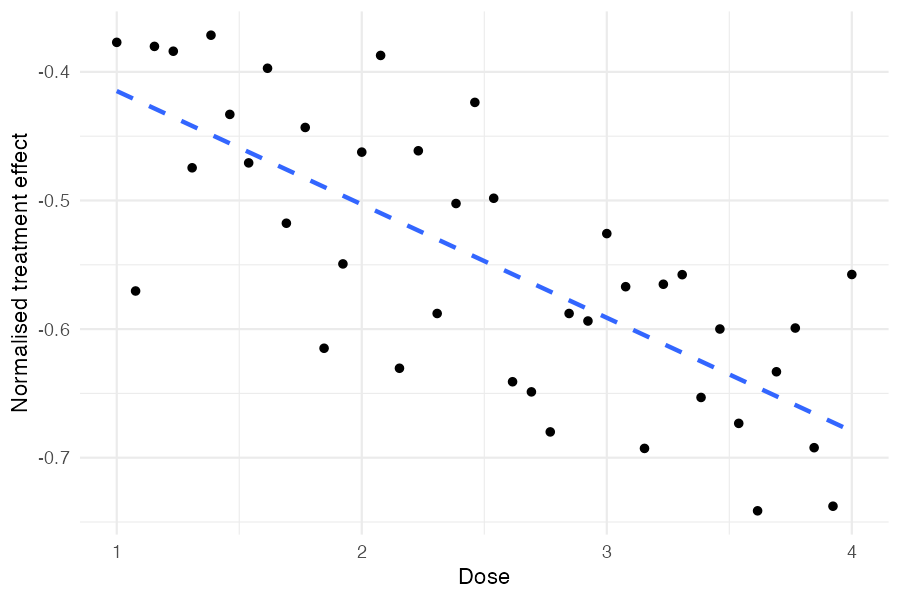
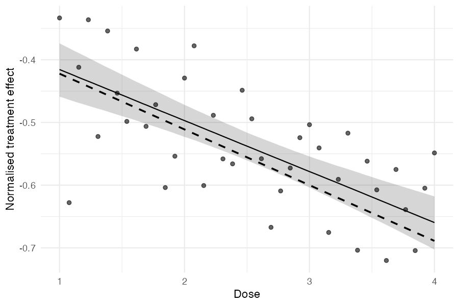

Treatment effects often vary systematically with study-level characteristics — for example, the dose of an intervention or the year a study was conducted. metadid supports meta-regression by letting you include study-level covariates that modify the population treatment effect. This vignette walks through simulating data from a model with a single continuous covariate (dose) and fitting the meta-regression to recover both the intercept and slope.
Simulation
We simulate 40 studies where the true treatment effect depends
linearly on a covariate called dose. Higher doses produce a
more negative treatment effect:
library(metadid)
library(dplyr)
library(ggplot2)
dose <- seq(1, 4, length.out = 40)
sim <- simulate_meta_did(
n_studies = 40,
n_control = 100,
n_treatment = 100,
true_effect = -0.15,
sigma_effect = 0.03,
true_trend = -0.02,
sigma_trend = 0.01,
baseline_mean = 0.45,
baseline_sd = 0.02,
rho = 0.5,
seed = 6427,
covariates = data.frame(dose = dose),
beta_cov = -0.04
)The covariates argument takes a data frame with one row
per study, and beta_cov is a numeric vector of regression
coefficients (one per covariate column). Here, each unit increase in
dose shifts the raw treatment effect by -0.04.
True dose–effect relationship
Before fitting any model, we can inspect the true simulated treatment
effects. Each study has a known
stored in the true_params attribute. Dividing by the
study’s baseline level puts these on the normalised scale that the model
will estimate:
true_params <- attr(sim, "true_params")
params_with_dose <- true_params |>
mutate(
num = as.integer(gsub("study_", "", study_id)),
dose = dose[num],
normalised_effect = theta / baseline
)
ggplot(params_with_dose, aes(x = dose, y = normalised_effect)) +
geom_point() +
geom_smooth(method = "lm", se = FALSE, linetype = "dashed") +
labs(x = "Dose", y = "Normalised treatment effect") +
theme_minimal()
Higher doses produce more negative treatment effects, as specified by
beta_cov = -0.04. The scatter around the trend reflects
sigma_effect, the between-study heterogeneity that remains
after accounting for dose.
Understanding the true parameter values
Because meta_did() normalises outcomes by the baseline
mean (by default), the parameters the model estimates are on the
normalised scale. With a baseline mean of 0.45:
- True normalised slope:
- True normalised intercept at mean dose:
When center_covariates = TRUE (the default),
treatment_effect_mean is the effect evaluated at the mean
covariate value, not at dose = 0.
Extracting summary data
We extract full DiD summary statistics from all 40 studies. The
covariate column (dose) is carried through
automatically:
did_data <- as_summary_did(sim)
# Verify dose is present
did_data |>
mutate(num = as.integer(gsub("study_", "", study_id))) |>
arrange(num) |>
select(study_id, design, dose) |>
head()#> # A tibble: 6 × 3
#> study_id design dose
#> <chr> <chr> <dbl>
#> 1 study_1 did 1
#> 2 study_2 did 1.08
#> 3 study_3 did 1.15
#> 4 study_4 did 1.23
#> 5 study_5 did 1.31
#> 6 study_6 did 1.38Fitting the meta-regression
Pass a one-sided formula to covariates to include the
meta-regression term:
#> Bayesian meta-analysis (metadid)
#> Studies: DiD = 40 | RCT = 0 | Pre-Post = 0 | DiD (change only) = 0
#> Population treatment effect: -0.538 90% CI [-0.560, -0.516]
#> Covariate coefficients:
#> dose: -0.081 90% CI [-0.105, -0.057]
#> (covariates were mean-centered; treatment_effect_mean is the effect at covariate means)Both the intercept (treatment effect at mean dose) and the slope are recovered, with the true normalised values (-0.556 and -0.089) falling within the 90% credible intervals.
Inspecting the posterior
We can look at the full summary, including study-level treatment effects:
te <- summary(fit)
te[te$parameter %in% c("treatment_effect_mean", "treatment_effect_sd",
"beta_cov[dose]"), ]#> parameter mean sd lo hi
#> 1 treatment_effect_mean -0.538 0.014 -0.560 -0.516
#> 2 treatment_effect_sd 0.077 0.010 0.061 0.095
#> 3 beta_cov[dose] -0.081 0.015 -0.105 -0.057The residual between-study SD (treatment_effect_sd)
represents the heterogeneity remaining after accounting for dose.
Estimated dose–effect relationship
A useful diagnostic is to plot the observed study-level treatment effects against the covariate and overlay the estimated regression line with uncertainty:
# Compute naive normalised effect per study
naive_effects <- did_data |>
mutate(
norm = mean_pre_control,
naive_effect = (mean_post_treatment - mean_pre_treatment) / norm -
(mean_post_control - mean_pre_control) / norm
)
# Posterior draws for regression line
beta_draws <- as.numeric(
fit$fit$draws("beta_cov", format = "draws_matrix")
)
intercept_draws <- as.numeric(
fit$fit$draws("treatment_effect_mean", format = "draws_matrix")
)
# Covariates were centered; reconstruct on original dose scale
dose_center <- fit$cov_centers[["dose"]]
dose_grid <- seq(min(dose), max(dose), length.out = 100)
# Each draw gives a line: intercept + beta * (dose - center)
line_df <- expand.grid(
dose = dose_grid,
draw = seq_along(beta_draws)
) |>
mutate(
fitted = intercept_draws[draw] + beta_draws[draw] * (dose - dose_center)
) |>
group_by(dose) |>
summarise(
median = median(fitted),
lo = quantile(fitted, 0.05),
hi = quantile(fitted, 0.95),
.groups = "drop"
)
# True regression line on the normalised scale
true_line_df <- data.frame(dose = range(dose)) |>
mutate(true_effect = (-0.15 + -0.04 * dose) / 0.45)
ggplot() +
geom_ribbon(data = line_df, aes(x = dose, ymin = lo, ymax = hi),
alpha = 0.2) +
geom_line(data = line_df, aes(x = dose, y = median)) +
geom_line(data = true_line_df, aes(x = dose, y = true_effect),
linetype = "dashed", linewidth = 0.8) +
geom_point(data = naive_effects, aes(x = dose, y = naive_effect),
alpha = 0.6) +
labs(x = "Dose", y = "Normalised treatment effect") +
theme_minimal()
The points are naive study-level estimates, the solid line is the posterior median regression with a 90% credible band, and the dashed line is the true data-generating relationship.
Posterior predictive checks
The standard posterior predictive checks work with covariate models. The model-implied predictive distribution for each study accounts for its dose level:
pp_check_cdf(fit, type = "summary")Mixed designs with covariates
Covariates work with mixed-design meta-analyses too. For example, if some studies are RCTs and others are DiD, just ensure the covariate column is present in all rows of the combined summary data:
study_ids <- unique(sim$study_id)
true_params <- attr(sim, "true_params")
sim_did <- sim |> filter(study_id %in% study_ids[1:20])
sim_rct <- sim |> filter(study_id %in% study_ids[21:40])
attr(sim_did, "true_params") <- true_params |> filter(study_id %in% study_ids[1:20])
attr(sim_rct, "true_params") <- true_params |> filter(study_id %in% study_ids[21:40])
mixed_data <- bind_rows(
as_summary_did(sim_did),
as_summary_rct(sim_rct)
)
fit_mixed <- meta_did(
summary_data = mixed_data,
covariates = ~ dose,
seed = 8153
)
print(fit_mixed)#> Bayesian meta-analysis (metadid)
#> Studies: DiD = 20 | RCT = 20 | Pre-Post = 0 | DiD (change only) = 0
#> Population treatment effect: -0.544 90% CI [-0.567, -0.522]
#> Covariate coefficients:
#> dose: -0.086 90% CI [-0.111, -0.060]
#> (covariates were mean-centered; treatment_effect_mean is the effect at covariate means)The credible intervals are somewhat wider with mixed designs, but both the intercept and slope are still recovered.
Multiplicative covariates
The covariates discussed so far enter the treatment-effect model
additively: each unit change in dose shifts the
expected effect by a fixed amount. Sometimes a covariate is better
described as scaling the effect — multiplying it by a factor
rather than shifting it. A common motivating example: experimental
(“artificial”) settings often produce larger effect sizes than
real-world deployments, and we’d like to estimate how much the
real-world effect is attenuated relative to the experimental one,
jointly with the experimental effect itself.
metadid supports this through the
multiplicative_covariate argument. The covariate is
categorical with a reference level: one multiplier is
estimated per non-reference level and applied to the studies at that
level, while the reference level’s factor is fixed at 1. A two-level
indicator
is the simplest case, with a single estimated multiplier
applied to the studies where it equals 1:
Studies with
identify the linear predictor directly; studies with
see it multiplied by the multiplier. The multiplier is
strictly positive, with a log-normal lognormal(0, 0.7)
prior: a median of 1 (the no-effect case, where every study contributes
to the same population mean) and no boundary at zero, so a small
attenuating multiplier is not pushed up against a hard limit. The prior
is placed on
,
so the factor is symmetric in “halving” versus “doubling”.
Example: experimental vs real-world studies
We build an illustrative summary data frame of 30 DiD studies in
three settings (10 each): an experimental batch and two real-world
batches whose true effects are attenuated relative to it. Each study is
tagged with its setting.
make_batch <- function(effect, setting, seed) {
sim <- simulate_meta_did(
n_studies = 10, n_control = 100, n_treatment = 100,
true_effect = effect, sigma_effect = 0.05,
true_trend = 0, baseline_mean = 0.45, seed = seed
)
sim$study_id <- paste0(setting, "_", sim$study_id) # keep IDs unique across batches
out <- as_summary_did(sim)
out$setting <- setting
out
}
studies <- rbind(
make_batch(-0.41, "experimental", 11),
make_batch(-0.27, "rw_lab", 22),
make_batch(-0.14, "rw_field", 33)
)A first pass collapses the two real-world settings into a single
{0, 1} indicator, estimating one multiplier for “any
real-world” relative to experimental:
studies$real_world <- ifelse(studies$setting == "experimental", 0, 1)
fit <- meta_did(
summary_data = studies,
multiplicative_covariate = "real_world",
priors = set_priors(
multiplier = lognormal(0, 0.7)
),
seed = 9931
)
print(fit)#> Bayesian meta-analysis (metadid)
#> Studies: DiD = 30 | RCT = 0 | Pre-Post = 0 | DiD (change only) = 0
#> Population treatment effect: -0.410 90% CI [-0.450, -0.372]
#> Multiplicative covariate (real_world):
#> 0: 1 (reference)
#> 1: 0.503 90% CI [0.412, 0.598]The reference level (0, experimental) is fixed at 1. The
interpretation: experimental studies produce an effect around -0.41,
while real-world studies produce roughly half of that (multiplier ≈
0.50). The combination yields the per-study mean used in the
meta-analysis.
Identifiability
A multiplicative covariate is only identifiable when the data contain
variation in both directions. meta_did() enforces this with
two checks:
-
Hard error: constant indicator. If every study has
or every study has
,
then
and the
multiplierare jointly unidentified — any pair with the same product gives identical likelihood.meta_did()stops with an error pointing to the column. -
Soft warning: collinearity with an additive
covariate. If
multiplicative_covariateis nearly perfectly correlated with one of thecovariates(|cor| > 0.95), the multiplier and that covariate’s coefficient will be weakly identified. The model still runs but the posterior correlation between them will be high. A warning is issued so you can investigate before trusting the result.
Categorical multiplicative covariates
The covariate is not restricted to a two-level indicator. With a
column such as setting taking the values
experimental, rw_lab, and
rw_field, one multiplier is estimated for each
non-reference level:
studies$setting <- factor(studies$setting,
levels = c("experimental", "rw_lab", "rw_field"))
fit <- meta_did(
summary_data = studies,
multiplicative_covariate = "setting"
)
summary(fit)#> parameter mean sd lo hi
#> 1 treatment_effect_mean -0.410 0.019 -0.442 -0.379
#> 2 treatment_effect_sd 0.052 0.011 0.036 0.072
#> 3 effect_multiplier[rw_lab] 0.659 0.071 0.548 0.781
#> 4 effect_multiplier[rw_field] 0.341 0.058 0.252 0.443Each non-reference level gets its own row, labelled
effect_multiplier[<level>] (the same name
print() uses): the lab setting retains about two-thirds of
the experimental effect, the field setting about a third. The reference
level (experimental) is fixed at 1 and is not shown as a
row.
The reference is the first factor level — declare the column as a
factor to control it, with identical levels declared in every data
frame. For numeric input the levels sort in ascending order (so a
{0, 1} indicator makes 0 the reference and 1 the single
non-reference level), and for character input alphabetically. The same
multiplier prior from set_priors() is applied
independently to each estimated factor, and the data must contain
studies at two or more levels for the multipliers to be identified.
Two multiplicative covariates (a product of factors)
A single fit may carry up to two multiplicative covariates. Pass a one-sided formula naming both columns; each is estimated independently and a study’s overall multiplier is the product of the two per-covariate factors, . This suits a design where the effect is scaled by two distinct study attributes at once — for example how the intervention was delivered, crossed with how intensively it was applied.
# Two independent study attributes, each scaling the effect multiplicatively.
studies$delivery <- rep(c("in_person", "remote"), length.out = nrow(studies))
studies$intensity <- rep(c("high", "low"), length.out = nrow(studies))
fit <- meta_did(
summary_data = studies,
multiplicative_covariate = ~ delivery + intensity,
priors = set_priors(multiplier = lognormal(0, 0.7))
)
summary(fit)#> parameter mean sd lo hi
#> 1 treatment_effect_mean -0.410 0.020 -0.443 -0.377
#> 2 treatment_effect_sd 0.055 0.011 0.039 0.075
#> 3 effect_multiplier[delivery:remote] 0.620 0.082 0.498 0.761
#> 4 effect_multiplier[intensity:low] 0.550 0.073 0.441 0.679Each factor’s reference level (in_person for
delivery, high for intensity,
both alphabetically first) is fixed at 1, so the rows report the
remaining levels. Here remote delivery retains about 62% of the
in-person effect and a low-intensity programme about 55% of a
high-intensity one; a remote, low-intensity study is scaled by the
product (≈ 0.62 × 0.55 ≈ 0.34). With two covariates the summary rows are
prefixed by the covariate name to disambiguate them. At most two
multiplicative covariates are supported.
When to use a multiplicative vs additive covariate
The two parameterisations encode different beliefs about the world:
- Use additive when each study’s effect is shifted by a fixed amount linked to the covariate, with the same shift size regardless of the underlying effect’s magnitude.
- Use multiplicative when the covariate attenuates or amplifies the underlying effect — e.g. a real-world implementation that captures a fraction of what an experiment showed, and a stronger experimental effect would also produce a proportionally stronger real-world effect.
The choice matters most for prediction at unobserved covariate values: under the multiplicative model, the predicted real-world effect tracks the experimental effect’s posterior; under the additive model it differs by a fixed offset.
A multiplicative covariate can be combined with one or more additive covariates in the same fit — provided they are not collinear with each other, as flagged above.